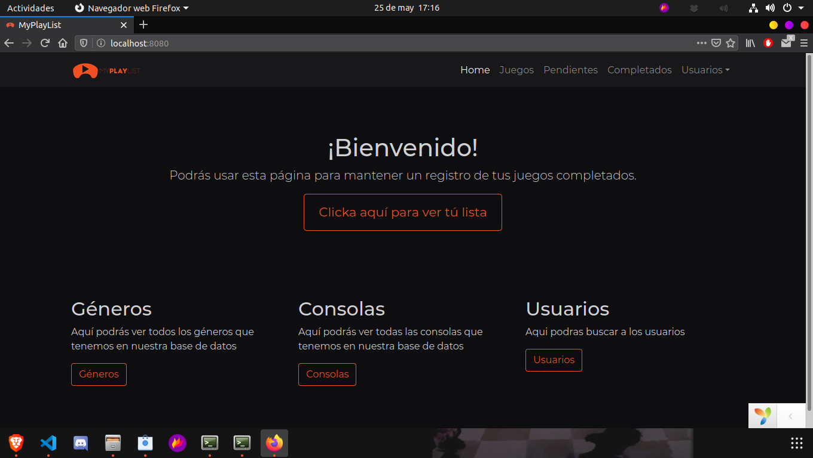
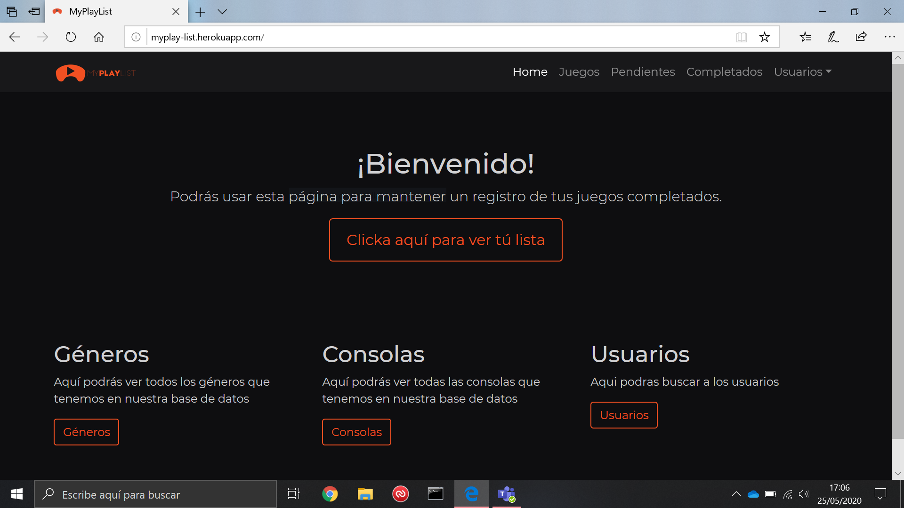

Anexos ¶
(R25) Codeception ¶

(R26) Code Climate ¶

Los problemas que da son de codigos que pasan de 25 lineas, de codigos de los plugin o codigos que se repiten(los controladores declaran el namespace de controller)
(R34) Validación HTML5, CSS3 y accesibilidad ¶
Validación de HTML y CSS ¶
HTML

CSS

En la imagen sale sin errores, pero si pulsas el enlace, te lleva a la validación de la página, y falla por culpa de Bootstrap y de JQuery
Validación de accesibilidad ¶

Prueba del seis ¶
¿Qué sitio es éste?
- La aplicación tiene en todo momento elementos indicativos de que sitio es. Arriba en la menú de navegación está en todo momento el logotipo de la aplicación.El menú de navegación y el pié de página se mantienen siempre, por lo que siempre está identificado el sitio.
¿En qué página estoy?
- Todas las páginas del sitio están identificadas por las migas de pan (excepto la inicial), lo que te sitúan en todo momento.
¿Cuales son las principales secciones del sitio?
- Las principales secciones del sitio son Completados, Juegos, Pendientes, Generos y Consolas (solo serán visibles si estamos logueados en la aplicación).
¿Qué opciones tengo en este nivel?
- Dependiendo de si eres administrador o un usuario, podras crear, eliminar, modificar y ver los modelos. Pero depende de cada uno, por ejemplo los géneros no se pueden borrar, pero las consolas si
¿Dónde estoy en el esquema de las cosas?
- En todas las páginas existe en la zona superior un indicador de bloque con las migas de pan.
¿Cómo busco algo?
- Cada seccion tiene su buscador especifico.
(R36) Varios navegadores ¶
Google Chrome ¶

Mozilla Firefox ¶

Opera ¶

Microsoft Edge ¶

(R38) Despliegue en local ¶
Debido a que no me funciona las maquinas virtuales en mi ordeandor voy a documentar como haria paso a paso el despliegue en servidor local.
- Crear un servicio de nombres de dominio
Instalamos Bind 9 con el siguiente comando
sudo apt install bind9- Una vez instalado nos movemos al fichero
name.conf.locallocalizado en/etc/bind - Dentro del archivo lo modificamos de la siguiente manera:
zone "myplaylist.com" IN{
type master:
file "/etc/bind/db.myplaylist"
}
Creamos el archivo db.myplaylist con el fichero original db.local de la siguiente manera
cp /etc/bind/db.local /etc/bind/db.myplaylistModificamos el fichero creado y lo dejamos de la siguiente manera:
;
; BIND data file for local loopback interface
;
$TTL 604800
@ IN SOA myplaylist.com. root.myplaylist.com. (
2 ; Serial
604800 ; Refresh
86400 ; Retry
2419200 ; Expire
604800 ) ; Negative Cache TTL
;
@ IN NS myplaylist.com.
@ IN A 192.168.100.1
ns IN A 192.168.100.1
www IN A 192.168.100.1
- Gestionar y administrar el servidor apache
2.1. Instalar el servidor y configurarlo
- Para instalar apache usariamos el comando
sudo apt install apache2 - Instalariamos el modulo de PHP con este comando
sudo apt-get install libapache2-mod-php - Tambien instalariamos un driver para el pdo de psql en apache
sudo apt-get install php-pgsql - Clonariamos el repositorio en el directorio
/var/www/html/ - Hariamos un
make install,db/create.shydb/load.sh - Una vez hecho todo esto, reiniciamos apache para confirmar las configuraciones
sudo systemctl restart apache2
2.2. Configurar directivas
* Nos movemos a la ruta `/etc/apache2/sites-available` y modificamos el fichero `000-default.conf`
* Lo dejariamos de la siguiente manera
<Directory "/var/www/html/myplaylist/web">
Options +indexes
AuthType Digest
AuthName "myplaylist"
AuthDigestProvider file
AuthUserFile /etc/claves/digest
Require user pepe
</Directory>
2.3. Usar directorios virtuales y redireccionamientos.
* Copiamos el fichero 000-default.conf de la siguiente manera `cp 000-default.conf myplaylist.conf` en el directorio `/etc/apache2/sites-available`
* Una vez copiado detenemos el 000-default con `site a2dissite 000-default.conf`
* Activamos el sitio de nuestra web con `site a2ensite myplaylist.conf`
2.4. Usar diferentes módulos estáticos y dinámicos.
2.5. Usar autenticaciones.
- Añadimos el modulo de digest con
sudo a2enmod auth_digest - Creamos el fichero de las claves en
/etc/claves/digest - Añadimos al usuario con el siguiente comando
sudo htdigest -c /etc/claves/ myplaylist pepe - Una vez hecho esto nos pedira una contraseña y confirmarla
- Para terminar podriamos añadir la directiva
Require user pepepara que solo pepe pudiera entrar a la aplicacion
2.6. Usar ficheros de configuración personalizada de directorios.
* Ya estaria hecho en el punto 2.3.
2.7. Usar HTTPS y certificados Digitales.
- Crearemos un par de clave y certificado autofirmados con OpenSSL con este comando
sudo openssl req -x509 -nodes -days 365 -newkey rsa:2048 -keyout /etc/ssl/private/apache-selfsigned.key -out /etc/ssl/certs/apache-selfsigned.crt - Con este comando nos iria preguntando la informacion que hay que añadir.
Output
Country Name (2 letter code) [AU]:ES
State or Province Name (full name) [Some-State]:Cadiz
Locality Name (eg, city) []:Sanlucar De Barrameda
Organization Name (eg, company) [Internet Widgits Pty Ltd]:IES Doñana
Organizational Unit Name (eg, section) []:
Common Name (e.g. server FQDN or YOUR name) []:192.168.100.1
Email Address []: myplaylist.web@gmail.com
- Creamos un nuevo fichero en el directorio
/etc/apache2/conf-available. Daremos el nombressl-params.confal archivo para que quede claro su propósito Le añadimos la siguiente informacion al fichero
`<VirtualHost _default_:443> ServerAdmin myplaylist.web@gmail.com ServerName www.myplaylist.com DocumentRoot /var/www/html/myplaylist ErrorLog ${APACHE_LOG_DIR}/error.log CustomLog ${APACHE_LOG_DIR}/access.log combined SSLEngine on SSLCertificateFile /etc/ssl/certs/apache-selfsigned.crt SSLCertificateKeyFile /etc/ssl/private/apache-selfsigned.key <FilesMatch "\.(cgi|shtml|phtml|php)$"> SSLOptions +StdEnvVars </FilesMatch> <Directory /usr/lib/cgi-bin> SSLOptions +StdEnvVars </Directory> </VirtualHost>`- Habilitamos mod_ssl, el módulo SSL de Apache y mod_headers, que necesitan algunas de las configuraciones de nuestro fragmento SSL, con el comando a2enmod:
sudo a2enmod ssl sudo a2enmod headers*A continuación, habilitamos nuestro host virtual SSL con el comando a2ensite:
sudo a2ensite default-ssl- También debemos habilitar nuestro archivo ssl-params.conf, para leer los valores que configuramos:
sudo a2enconf ssl-params- Para finalizar, reiniciamos apache y listo.
(RXX) Tecnologias usadas ¶
- Ubuntu 20.04 como sistema operativo
- Heroku como alojamiento cloud
- Yii2 como framework
- GIT, GITHUB y GIT-FLOW para el control de versiones
- Visual Studio Code como IDE
- Brave como navegador principal
- Dbeaver como interfaz grafico SQL
- Umlet como editor de diagramas
- Codeception para las pruebas unitarias
- AWS S3 como almacenamiento cloud de archivos
- IGDB como API para obtener datos adicionales de los juegos.